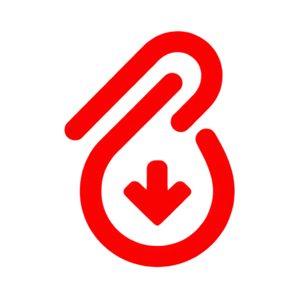

Zero-Config de Ferramentas
O ClipDrop gerencia internamente os executáveis do yt-dlp, FFmpeg e runtime Deno. Você instala a aplicação e ela já está pronta para uso imediato.
Extraia áudios e vídeos de mais de 1.800 plataformas com o poder do yt-dlp e FFmpeg em uma experiência Zero-Config pura e fluida.
Cole a URL de qualquer vídeo, áudio, transmissão ou playlist inteira. O ClipDrop reconhece a origem e obtém os streams rapidamente.
Escolha áudio de alta fidelidade (MP3/FLAC com injeção de capa e ID3) ou vídeo até 4K. Opcionalmente defina trechos exatos de corte (Trim).
Os binários integrados do yt-dlp e FFmpeg fazem o download e a conversão sem perdas diretamente na sua máquina, com máxima velocidade.
Historicamente, utilizar o yt-dlp e o FFmpeg exigia instalar o Python, configurar variáveis de ambiente PATH, lidar com erros de permissão e rodar comandos criptográficos no terminal.
O ClipDrop abstrai toda essa complexidade. Ele entrega os binários oficiais em um ambiente isolado e auto-atualizável, proporcionando a força bruta das melhores ferramentas do mundo em uma interface gráfica elegante.
Não modifica o seu sistema nem interfere em outras versões do Python ou FFmpeg já instaladas.
Compatível nativamente com YouTube, TikTok, Instagram, Twitter/X, Twitch, SoundCloud, Vimeo e centenas de outros.
Seus links e arquivos nunca passam por servidores de terceiros. Sua privacidade e banda são totalmente preservadas.

Stack IntegradaTudo o que você precisa em uma única janela limpa, sem anúncios ou assinaturas.
O ClipDrop gerencia internamente os executáveis do yt-dlp, FFmpeg e runtime Deno. Você instala a aplicação e ela já está pronta para uso imediato.
Extração sem perdas para MP3 (até 320 kbps), FLAC, WAV e M4A. Injeta automaticamente metadados completos como artista, título e arte do álbum.
Suporte completo para resoluções de 1080p, 2K, 4K e até 8K em 60fps. Escolha entre contêineres MP4 ou MKV com a opção de copiar streams sem re-renderizar.
Baixe listas de reprodução completas ou selecione faixas específicas. Defina intervalos exatos de início e fim no formato HH:MM:SS para baixar apenas o trecho desejado.
Extraia legendas embutidas ou em arquivos externos (.srt / .vtt) em múltiplos idiomas. O sistema detecta downloads prévios para não desperdiçar largura de banda.
Nenhum dado é enviado para a nuvem. Aproveite o limite real da sua conexão de internet sem throttles impostos por conversores web convencionais.
O ClipDrop é distribuído como executável independente. Livre de anúncios, adware ou instaladores secundários.
Compatível com Windows 10 e Windows 11.
Distribuições Linux baseadas em Debian, Ubuntu e Mint.
Compatível com Apple Silicon (M1/M2/M3) e processadores Intel.
Tudo o que você precisa saber sobre a arquitetura e funcionamento do ClipDrop.